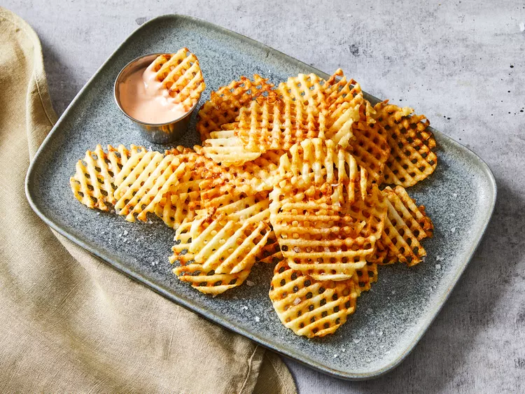

Waffle Fries

Description
These waffle fries are super crunchy, almost like shoestring potatoes, and served with a yummy homemade dipping sauce. A great snack for game night or as a side for burgers.
Ingredients
- 2 pounds russet potatoes, peeled
- Peanut or vegetable oil for frying
- 1/2 tsp salt or desired seasoning
Steps
- Gather all ingredients. Preheat oven to 200 degrees F (400 degrees C). Set two wire racks atop paper towels.
- Fill a large bowl with ice water. Using a mandoline with a waffle blade set to 1/4-inch, slice potatoes crosswise, then rotate 90° and make another slice for each waffle fry (you can also use a crinkle cutter using the same process).
- Add cut waffle fries to the ice water as they are done.
- In a large heavy saucepan, add 2 inches of oil. Clip a candy/oil thermometer to the side of the pan. Heat oil over medium heat to 310 degrees F (155 degrees C).
- Drain waffle fries and blot dry with paper towels.
- Working in batches, fry waffle fries 4 to 5 minutes. They should just cook through at this point, but not brown.
- Remove from oil with a slotted spoon and place on wire racks.
- Increase oil temperature to 375 degrees F (190 degrees C). Add waffle fries in batches and cook 1 to 2 minutes until golden brown.
- Drain on paper towels, and sprinkle with salt. Transfer cooked fries to the oven to keep warm while frying remaining waffle fries.